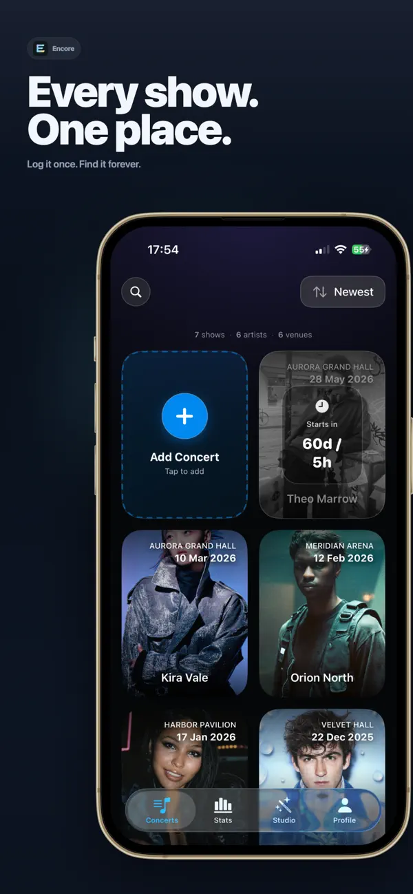
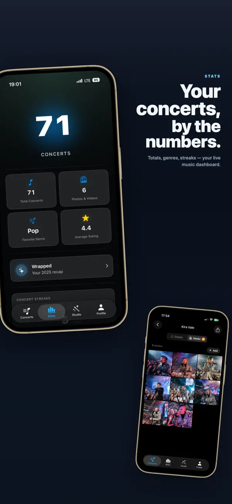
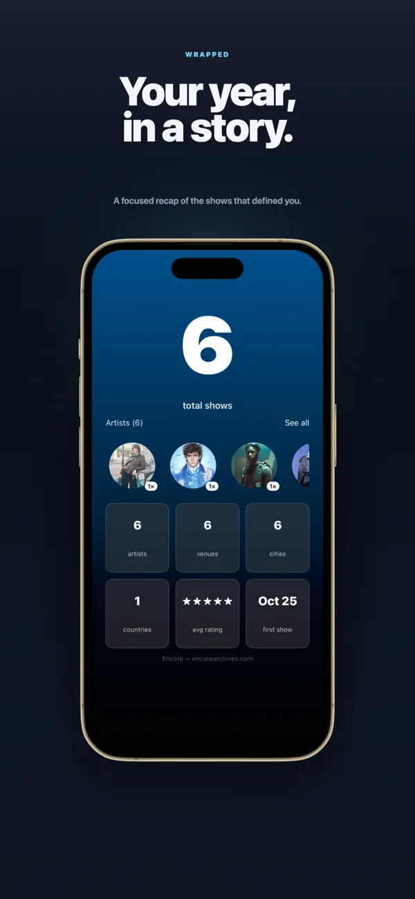
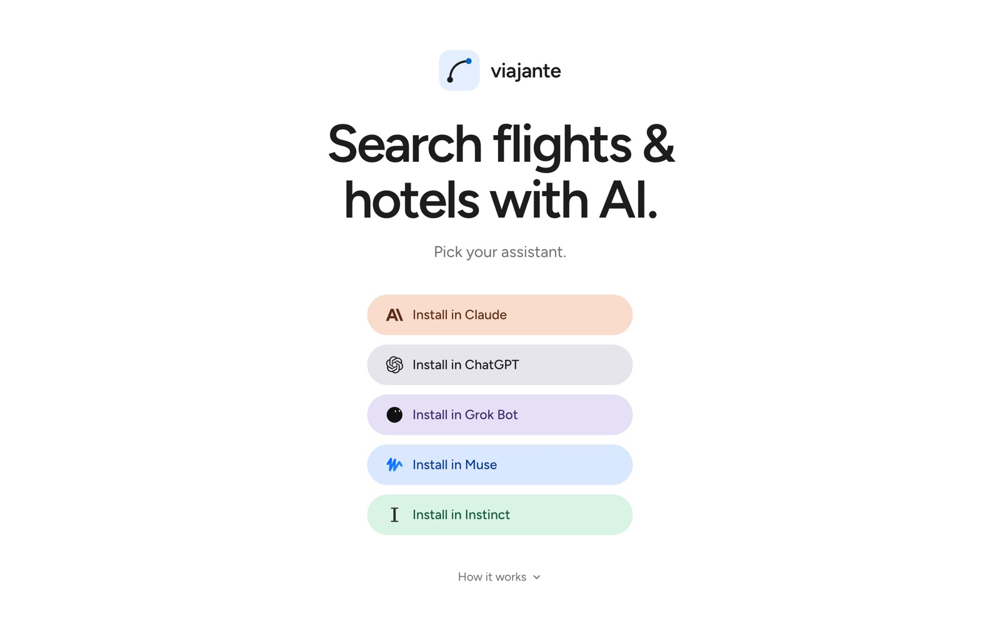
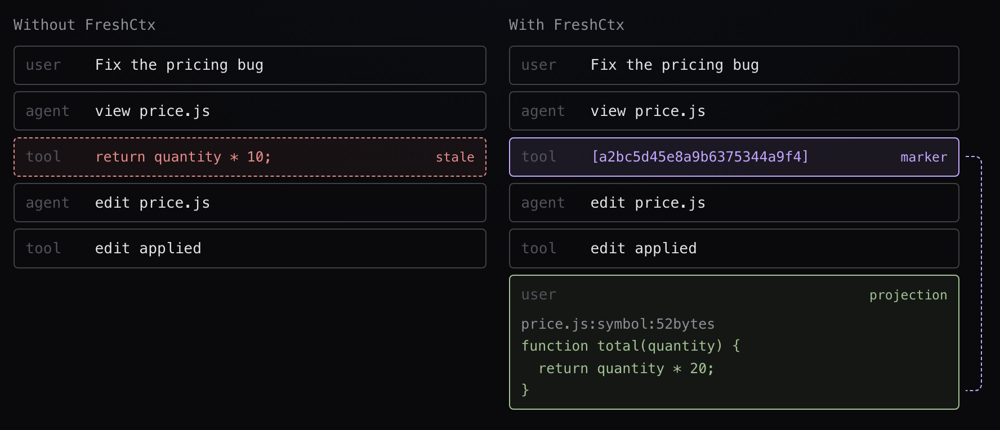

Projects
Things I built and shipped myself. Live products first, then smaller work, experiments, and university projects.
Featured
Encore
Letterboxd for concerts. Log the artist, venue, photos, and videos on the way home, then get stats, a venue passport, and a year-end recap. Available in four languages.
Over 2,700 accounts and 15,000 concerts logged.



Viajante
Searches Google Flights, Google Hotels, and Booking.com from your own machine, with no API keys. Beyond plain search it finds the cheapest dates, explores destinations from an origin, checks Skiplagged hidden-city fares, and compares award points across transfer partners. Install from PyPI or npm, or run it with `uvx`.



FreshCtx
Before each model request, it swaps old file reads in the conversation for the current code, within a token budget. The saved conversation stays intact, and the measurements live in a separate research repo.
In 78% of 67,074 public agent runs, the model saw stale code. In a replay of 1,198 runs, every piece of code FreshCtx inserted matched the file byte for byte.

Also shipped
- ●HabitDexPokémon-style habit tracker for iPhoneApp Store Details
- ●Audio Silence RemoverMac app that cuts dead air from voiceoversApp Store GitHub Details
- ●
 TomaMac menu bar app that records a screen region as MP4, HEVC or GIFSite GitHub Details
TomaMac menu bar app that records a screen region as MP4, HEVC or GIFSite GitHub Details - ●SurvivorTiersSimulation-based tier list for the fan game PokéSurvivorSite Method GitHub Details
- ●MusatroBrowser roguelike built on the card game MusPlay GitHub Details
- ●herdr-fleetRuns several coding agents in parallelGitHub Pull requests
- ○Plugin FactoryTurns client information into a Claude pluginGitHub
Music
- ●Triple CheckSpanish pop-rock band, 1.7M Spotify streamsSpotify Details
Videos
- I Built A Dynamic LLM Context Engine
- How do Passthrough Mods Actually work?
- How I let AI plan my entire trip
- Introducing viajante
- Warbands Minecraft Mod Trailer
More
experiments/5
cueOn-device meeting recorder for the Mac
Records the microphone and system audio together and transcribes on the device through a native Swift helper built on transcribe.cpp.
underscoreOriginal music scored to your video edit
Mark in and out inside the video editor, press generate, and get an original track that lasts exactly that long and changes where the video changes.
roamlyVoice travel buddy for iPhone
Talk to a travel buddy by voice, built on ElevenLabs Agents. Built in 2.5 hours at the ElevenLabs x Enzo Ventures Build Night in Madrid, in a team of three formed on the night, and placed second.
automatic-farmsMinecraft mod that builds survival farms
Place a controller, pick a blueprint, load the materials, and it builds the farm block by block. Blueprints include a mob drop tower, an iron golem farm, a creeper gunpowder chamber, and a Nether gold farm.
archive/8
ultramarOffline travel assistant on local models
 Ultramar AI [archived] 2026 SwiftUI Qwen Gemma Apple Intelligence
Ultramar AI [archived] 2026 SwiftUI Qwen Gemma Apple IntelligenceChat, translation, and photo questions run on local Qwen and Gemma models, with Apple Intelligence as a fallback, so it works on a plane or while roaming.
simpleindiebudgetBudget tracker for indie app makers
Tracks subscriptions, recurring costs, and revenue estimates for indie app makers, with CSV import.
viralslideTikTok slideshow generator with AI hooks
AI-written hooks and reusable slideshow formats, in English and Spanish. Built in two afternoons.
fancydocumentsTurns plain text into designed documents
Upload plain text, Word, or Markdown and get a designed document, with a live preview and credit-based pricing.
katariteIllustrated AI bedtime stories for children
 Katarite [archived] 2025 React Supabase Gemini Stripe
Katarite [archived] 2025 React Supabase Gemini StripePersonalized stories with generated images, accounts, and a subscription.
ideashubProject docs workspace with AI drafting
Structured docs for software, hardware, and service projects, with a Markdown editor and AI-drafted sections.
kalkiCalorie and weight tracker for iPhone
Food logging, weight charts, BMR and TDEE goals, and achievements.
chatherenciasAI assistant for Spanish inheritance law
 ChatHerencias [archived] 2025 Next.js Prisma PostgreSQL Stripe
ChatHerencias [archived] 2025 Next.js Prisma PostgreSQL StripeOne free consultation, then paid credits through Stripe.
university/10
- tfl-data-pipelineData pipeline on TfL data with NiFi, Hadoop, and Spark
- titanic-analysisTitanic data analysis and missing-value imputation
- perceptron-with-svmsPerceptron and SVM classifiers, in Spanish
- employee-attritionEmployee attrition prediction with iterative sampling
- fifa-22-mlPredicting FIFA Ultimate Team 22 ratings from stats
- rental-bikes-dashboardBike rental ML dashboard with PyCaret and Streamlit
- tokyo-2021-edaTokyo 2020 Olympics EDA and Looker Studio dashboard
- uber-madrid-dashboardStreamlit dashboard of Uber trips in Madrid
- matlab-video-processingVideo and image processing in MATLAB with CUDA
- scikit-image-processingImage editing with scikit-image